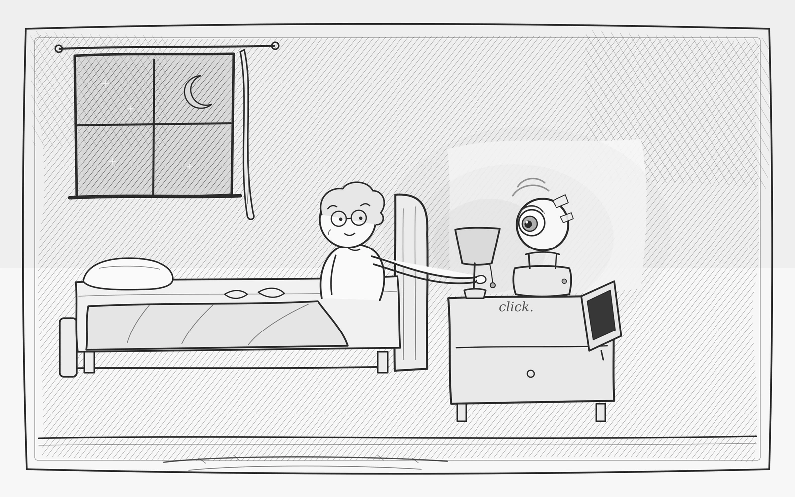
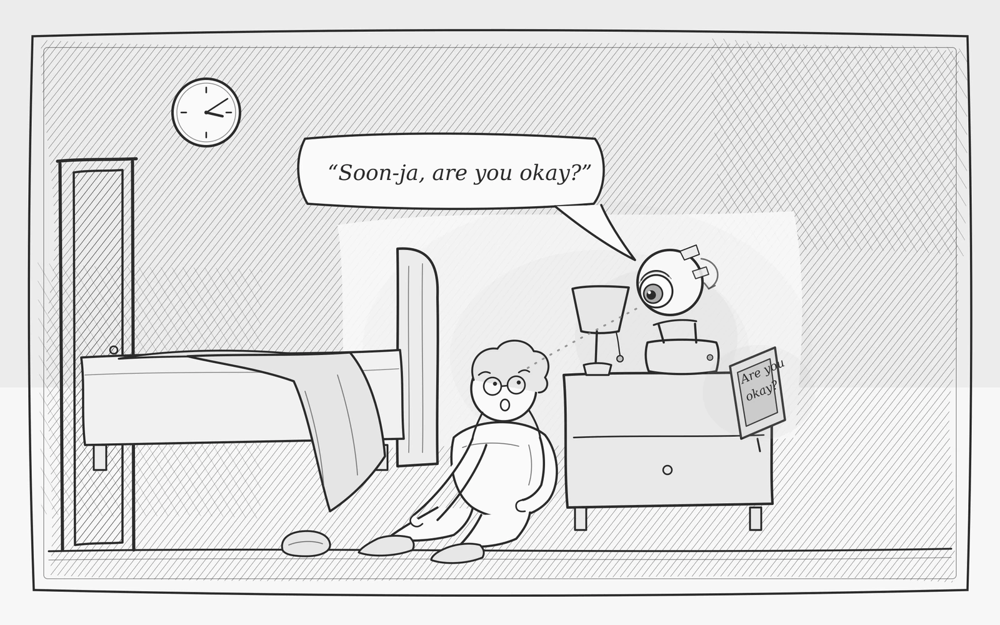
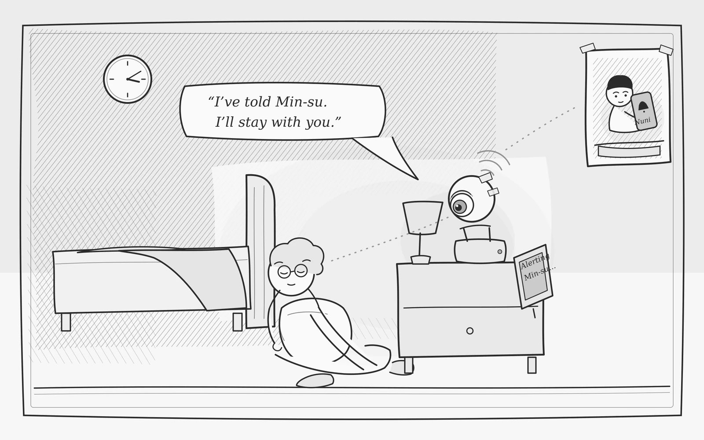
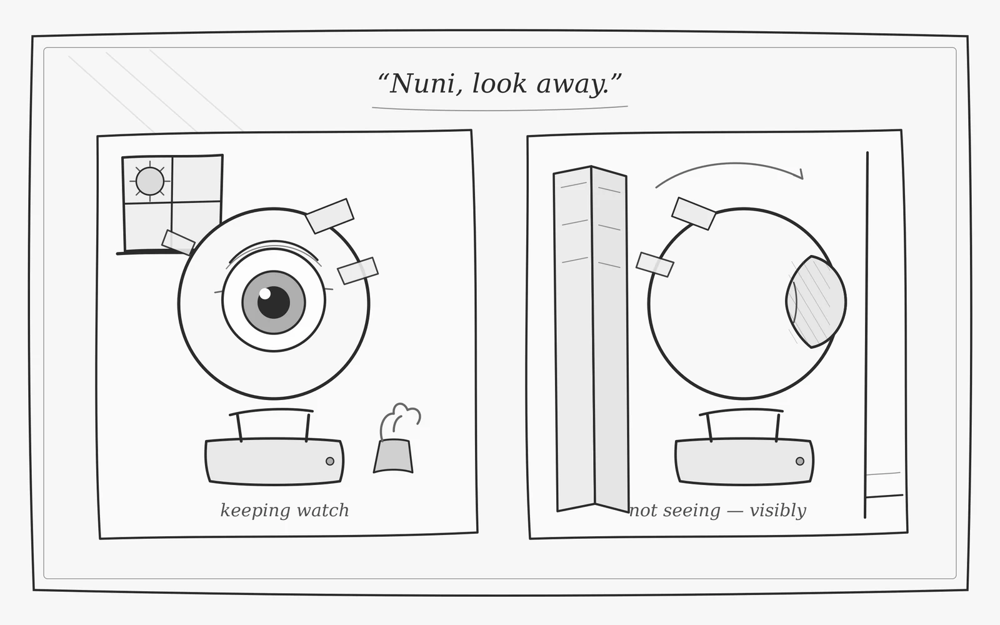

Nuni: A Bedside Care Robot that Asks Before It Tells

Abstract
Night is when older adults living alone are most vulnerable, and when help is farthest away. Camera monitoring promises safety, but to many it feels like surveillance, and gets refused. Nuni is a bedside care object built from an off-the-shelf pan-tilt camera that became an eye. Through the night it keeps watch in the dark. When it senses a possible health event, such as a fall or an unusual stillness, it does not sound an alarm. It turns, leans in, and quietly asks: “Soon-ja, are you okay?” An answer settles it; only silence escalates to family. When watching is not needed, a physical eyelid closes over the lens: not seeing, and visibly so. All perception runs on-device, to be evaluated under our degraded-vision health-monitoring protocol; video never leaves the room. Nuni reframes care monitoring as a partnership: the robot keeps the vigil, the human keeps her dignity, the family keeps their peace.
Design Context
Soon-ja, 78, lives alone in a small apartment in Seoul. Her son Min-su lives an hour away; he calls every evening, and worries every night. She has refused a monitoring camera twice.
“I will not be watched in my own home.”
This project begins from that refusal: how might a robot earn a place at the bedside of someone who has already said no to a camera?
Scenario of Use
Scene 1 (10:30 PM): The night shift
Soon-ja switches off the light. On the nightstand, Nuni turns to her and gives a small nod, its way of saying it will take the night shift. Its eye stays open in the dark so that hers can close.
Scene 2 (3:12 AM): A question, not an alarm
On her way back from the bathroom, Soon-ja stumbles and sits down hard on the floor. Nuni reads a person on the floor, not rising. It does not sound an alarm. It turns, tilts down toward her, and asks softly: “Soon-ja, are you okay?” On most nights the story ends here (“I’m fine, I just slipped”), Nuni nods, and no one else’s night is broken.

Scene 3: Only silence escalates
Tonight there is no answer. Nuni asks once more and waits, watching for any movement. After twenty seconds of silence and stillness, it sends Min-su a short alert, then turns back to her: “I’ve told Min-su. I’ll stay with you.” Until help arrives, it keeps talking to her, the one thing an alarm cannot do.

Scene 4 (the next afternoon): Seen not seeing
A nurse visits to help her wash and change. “Nuni, look away.” The head pans to the wall and a physical eyelid slides shut over the lens. Soon-ja can see that it cannot see. Privacy here is not a setting buried in an app; it is a gesture she can watch happen.

Collaboration Model: A Team of Three
Soon-ja keeps her autonomy: she is always the first to be asked about herself, and her answer outranks the algorithm. Nuni contributes what humans cannot sustain: patient, tireless perception in the dark, and the discipline to ask before it tells. Min-su contributes what machines cannot: the response that matters, freed from the anxious checking that used to fill his evenings. The robot does not replace family care; it redistributes it, routine vigilance to the machine and meaningful response to the humans.
Behavioral Design
Nuni’s vocabulary is small and legible. With no roll axis, a quick pan double-take stands in for a head tilt.
- Greet: slow pan sweep, nod
- Attend: turn, lean-in tilt
- Ask: forward tilt, soft voice, subtitles on the bedside monitor
- Stand down: nod, half-closed lid
- Look away: pan to the wall, lid fully shut
- Stay: steady gaze, slow nods while speaking
Technical Design
Nuni is an off-the-shelf PTZ camera, hacked: the gimbal becomes a neck, the lens an iris, and successive paper faces its first skins. All perception will run on a Jetson Orin Nano at the bedside. Person and pose detection yields a lying-on-floor state detector, and a health-event score with a persistence rule gates the question-first policy: ask, listen and watch for a response, escalate only on silence. Offline TTS speaks; a small monitor shows status and subtitles. Nothing streams; video never leaves the device. The perception stack will be evaluated under our existing degraded-vision health-monitoring protocol (low-light stress tests with attribution-controlled baselines, established in our prior work), and during development we will log nightly false-intervention counts: the number that decides whether a bedside robot is trusted or unplugged.
Development Plan
The build proceeds in three stages, documented throughout for the design-process presentation:
- the bare off-the-shelf PTZ camera, verified for motion control, speed, and noise;
- taped paper faces: five-minute, low-cost iterations of the eye and expression design;
- a working bedside prototype with user tests and nightly false-intervention logs.
Development runs July to August 2026, concluding with a working demonstration at RO-MAN 2026 in Kitakyushu, Japan.
Figures 1 to 4 are original illustrations generated with AI assistance (Claude, Anthropic) and art-directed by the author.